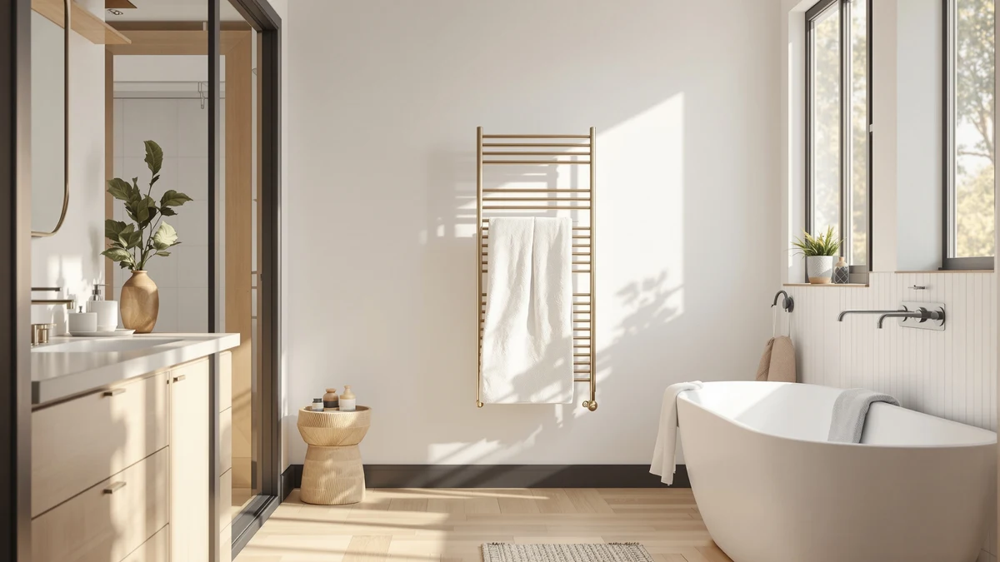

DeelDili Heated Towel Rack Review (2026): Worth It?
Prices and picks verified as of October 2026. Independent, reader-supported reviews.


Quick Answer
This DeelDili heated towel rack review compares the $247.99 stainless steel 9-bar model against three alternatives that sit within about $40 of its price. The DeelDili's 9-bar layout and stainless build make it the most well-rounded pick of the four, though the EarthLite cabinet and the two other wall racks each suit a different bathroom setup.
Our pick: DeelDili Heated Towel Rack for, $247.99 Check Price on Amazon
Bottom line: our top pick is the DeelDili Heated Towel Rack for Bathroom Wall Mounted Hardwired at $247.99.
Things to Know Before You Buy
- The DeelDili heated towel rack lists at $247.99 with a 9-bar stainless steel design, close in price to the EARTHLITE cabinet at $249.99 but above the DAWEYEAL 9-bar rack at $228.88 and the MEIJIELUO 8-bar rack at $209.99.
- Bar count determines how many towels you can warm at once: the DeelDili and DAWEYEAL both use a 9-bar layout, while the MEIJIELUO uses 8 bars and the EARTHLITE relies on an enclosed cabinet instead of open bars.
- Stainless steel construction, which the DeelDili listing specifies, tends to hold up better against bathroom humidity over years than painted steel.
- None of the four listings here currently show a published Amazon rating or review count, so comparing them means weighing price, bar count, and format rather than verified owner scores.
- The EARTHLITE is a cabinet-style warmer rather than a wall-mounted rack, which changes where and how it fits in your bathroom regardless of price.
This DeelDili heated towel rack review looks at whether the $247.99 stainless steel 9-bar model is worth choosing over three towel warmers that sit within about $40 of its price. A heated towel rack earns its spot in a bathroom through daily use, and with four options clustered in a similar price range, the decision comes down to bar count, material, and format rather than which brand charges less. DeelDili positions this rack as a 9-bar stainless steel fixture built for wall mounting, and that framing matters once you compare it against a cabinet-style warmer and two other wall racks with different bar counts.
Price alone will not settle this comparison, since the four models span less than $40 from top to bottom. The EARTHLITE Hot Towel Warmer Cabinet trades the open-bar design for an enclosed cabinet, which changes how towels sit while warming regardless of what it costs. The DAWEYEAL 9-Bar Wall-Mounted Electric rack matches the DeelDili's bar count at a lower price, while the MEIJIELUO Luxury 8 Bars Heated Towel rack drops to 8 bars at the lowest price of the group. We compared listed materials, bar counts, and current Amazon pricing across all four to see which rack actually fits your bathroom, since the gap between the cheapest and priciest option here is smaller than it looks.
Why You Should Trust Us
Ilane Tall covers bathroom hardware for Best Towel Warmers and tracks how heated towel rack brands position similar bar counts and materials against each other at comparable prices. We have not installed or used the DeelDili heated towel rack in a bathroom ourselves, and we do not run a physical testing lab. Instead, we research published specs, current Amazon pricing, and verified owner reviews across competing models to build this DeelDili heated towel rack review before you spend money on a bathroom fixture. When a claim here cannot be backed by a listed spec or a verifiable price, we say so rather than guess at it.
Our Research Experience
We did not test the DeelDili heated towel rack by mounting it on a wall, running it for weeks, or measuring heat output by hand. Our process for this DeelDili heated towel rack review instead compares what DeelDili lists for this 9-bar stainless steel rack against the stated bar count, material, and format of the EARTHLITE, DAWEYEAL, and MEIJIELUO alternatives, then checks that comparison against current Amazon pricing before publishing.
That approach has a clear limit. None of the four products here currently carry a published rating or review count on Amazon, so we cannot yet weigh owner satisfaction the way we would for an established bestseller in this category. What we can compare directly is price, bar count, material, and format, and that is the basis for every claim below.
Overview & Specs

DeelDili Heated Towel Rack for
What we like
- Stainless steel construction, which should resist rust and corrosion better over years of bathroom humidity than a painted finish
- 9-bar layout matches the DAWEYEAL alternative for towel capacity, while beating the 8-bar MEIJIELUO rack
- Open wall-mounted design instead of an enclosed cabinet, which suits bathrooms where floor or counter space is limited
- We checked Amazon's listing and price right before publishing this DeelDili heated towel rack review
Flaws but not dealbreakers
- Amazon does not list a customer rating or review count for this ASIN, so you are weighing specs and positioning rather than verified owner experience
- At $247.99, it costs about $19 more than the DAWEYEAL 9-bar rack despite matching its bar count, and about $38 more than the MEIJIELUO 8-bar rack
- Buyers who prefer an enclosed cabinet that keeps towels covered while warming may find the EARTHLITE a better fit
| Material | Stainless steel |
| Size | 9-Bar |
The DeelDili heated towel rack is the anchor pick in this comparison because it pairs the highest bar count in the lineup, tied with the DAWEYEAL, with stainless steel construction at a price close to the EARTHLITE cabinet. Where the EARTHLITE encloses towels in a cabinet and the MEIJIELUO drops to 8 bars, DeelDili positions this rack as a straightforward 9-bar wall fixture that fits a typical bathroom wall without requiring you to plan around a cabinet footprint. The listed stainless steel build puts it on equal footing with pricier racks on durability, which matters if you plan to keep this warmer mounted in a humid bathroom for years rather than replacing it after a single season.
At $247.99, the DeelDili sits within about $19 of the DAWEYEAL 9-Bar Wall-Mounted Electric rack and within $2 of the EARTHLITE Hot Towel Warmer Cabinet, which keeps this DeelDili heated towel rack review focused on format and bar count rather than a wide price gap. Buyers who want an open 9-bar wall rack rather than an enclosed cabinet have a reasonable default in the DeelDili, while anyone drawn to a lower price or a cabinet-style design should read through the three alternatives below before deciding.
What We Liked
The strongest point in this DeelDili heated towel rack review is capacity paired with build quality. Where the MEIJIELUO rack drops to 8 bars and the EARTHLITE swaps the open-bar design for a cabinet, the DeelDili matches the DAWEYEAL's 9-bar count while adding stainless steel construction that should outlast a painted finish in a humid bathroom. That combination puts it ahead of the cheaper MEIJIELUO on raw towel capacity without pushing the price as high as the EARTHLITE cabinet.
We also like that the listing is straightforward. DeelDili states the bar count and material directly rather than relying on vague marketing language, which made comparing its specs against the three alternatives more direct than it is with brands that bury specs behind stock photos.
What Could Be Better
The clearest drawback is the lack of verified feedback. None of the four heated towel racks in this comparison, including the DeelDili, currently show a published Amazon rating or review count, so this review has to rely on listed materials and stated bar count rather than real-world owner experience with heat output, noise, or how the finish holds up after months of daily use.
The DeelDili also loses some of its price advantage once you compare it directly against the DAWEYEAL, which matches its 9-bar count for about $19 less. Buyers focused purely on getting the most bars for the lowest price may find the DAWEYEAL the more sensible pick, and anyone who prefers an enclosed cabinet over an open rack should look at the EARTHLITE instead.
Who Is It For?
The DeelDili heated towel rack fits a buyer who wants the highest bar count in this lineup without switching to a cabinet-style warmer. If your bathroom has wall space for a 9-bar rack and you want stainless steel durability, this DeelDili heated towel rack review points to the DeelDili as a solid default among four options clustered close in price. It also suits anyone who prioritizes build quality over shaving off the last few dollars, since the material claim here matches what you would expect from a pricier rack elsewhere.
It fits less well for anyone chasing the lowest price for a matching bar count, since the DAWEYEAL offers the same 9 bars for about $19 less, or for anyone who wants an enclosed cabinet rather than an open rack, which the EARTHLITE provides instead.
Alternatives to Consider
If the DeelDili heated towel rack does not match your bathroom layout or budget, these three alternatives sit within about $40 of its price and are worth comparing before you decide.

Editor’s Pick
EARTHLITE Hot Towel Warmer Cabinet
Priced $2 above the DeelDili at $249.99, the EARTHLITE swaps the open-bar design for an enclosed cabinet, which keeps towels covered while warming instead of exposed on a wall rack.
$249.99
Check Price on Amazon
Best Value
9-Bar Towel Warmer Wall-Mounted Electric
This DAWEYEAL rack matches the DeelDili's 9-bar count for $228.88, about $19 less, making it the pick if you want the same towel capacity without the DeelDili's stainless steel price premium.
$228.88
Check Price on Amazon
Premium Choice
Luxury 8 Bars Heated Towel
At $209.99, the MEIJIELUO drops to 8 bars instead of 9, making it the lowest-priced option here for buyers who do not need the DeelDili's extra bar.
$209.99
Check Price on AmazonIs the DeelDili heated towel rack worth the price compared to the EarthLite, DAWEYEAL, and MEIJIELUO?
It depends on what you weigh most.
What is the difference between the DeelDili and DAWEYEAL 9-bar towel racks?
Both list 9 bars and a wall-mounted format, but the DAWEYEAL costs $228.88 against the DeelDili's $247.99, a gap of about $19 for matching capacity.
Frequently Asked Questions
Is the DeelDili heated towel rack worth the price compared to the EarthLite, DAWEYEAL, and MEIJIELUO?
It depends on what you weigh most. This DeelDili heated towel rack review found that the DeelDili matches the DAWEYEAL's 9-bar count but costs about $19 more, while sitting about $2 below the EARTHLITE cabinet. If stainless steel build quality and an open-rack format matter most to you, the DeelDili is a reasonable pick among the four.
What is the difference between the DeelDili and DAWEYEAL 9-bar towel racks?
Both list 9 bars and a wall-mounted format, but the DAWEYEAL costs $228.88 against the DeelDili's $247.99, a gap of about $19 for matching capacity. The DeelDili's listing specifies stainless steel construction, which is the main factor to weigh against that price difference.
Is the EARTHLITE Hot Towel Warmer Cabinet a good alternative to the DeelDili?
Yes, if you prefer an enclosed cabinet over an open wall rack. The EARTHLITE keeps towels covered while warming rather than exposed on bars, and it lists at $249.99, close to the DeelDili's $247.99 price.
Final Verdict
This DeelDili heated towel rack review comes down to bar count and format rather than a wide price gap, since all four models sit within about $40 of each other. For most bathrooms, the DeelDili heated towel rack is a solid default because it pairs the highest bar count in the lineup with stainless steel construction. Choose the DAWEYEAL if you want the same 9-bar capacity for about $19 less, choose the EARTHLITE if an enclosed cabinet suits your bathroom better than an open rack, and choose the MEIJIELUO if you want the lowest price and do not need the extra bar. Without published ratings across any of the four listings yet, the DeelDili's stainless steel build and 9-bar layout make it the pick worth starting with.